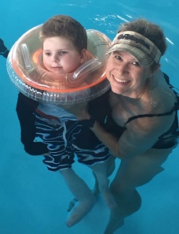
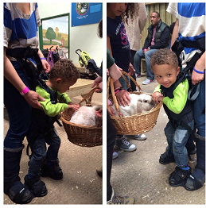
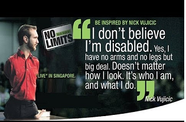

✦ The Special Needs Village ✦
Village Experiences
“My son, Conner, has Spastic Diplegia CP. We have found that water therapy and equestrian therapy are very helpful. The water therapy gives him to ability to work and stretch his muscles with less stress. Equestrian therapy has really helped with his stretching his hip flexors and strengthening his core to help with balance. We did have to get his neurologist and both his PT and OT to fill out paperwork to get it approved by his insurance but they were more than willing to do it.” ~Martie B."

“Our daughter, Maddie, has Spastic Hemiplegia CP. She has done very well with water therapy, equestrian therapy and riding her AmTrike. The therapies were fairly easy to get approved and didn't take very long. AmTrikes are custom built and your therapist needs to refer you to their company for an evaluation of need but it is definitely worth it. Maddie loves riding with her brothers and the kids in our neighborhood. I really recommend the water therapy also. We went from her not wanting to participate, getting extremely frustrated and non-compliant to being excited to go to therapy every week. I will say as a precaution, not all clinics have a pool and not all of them have partnerships with indoor pools that can be used for therapy. Some places will allow it but others like the YMCAs will not due to liability reasons. It took us a few months to find a place but we have been going there for 3 years now.” ~Jessica R.

“Our son, Chris, has PPD-NOS which is a type of Autism. We have tried numerous variations and combinations of therapies but never received as much positive feedback or saw as much improvement as we have with the brushing therapy! After reading Noah's journey on this page we asked our school therapist if she was familiar with it and if we could try it with Chris. She had actually recently gone to a class to learn it because it has been producing such calming and productive results. She started Chris the next day and after seeing how it went for a week, she now implements it everyday into his routine. There are article and vidoes that go over the pros and cons and many of them are very helpful.” ~Melia K

“My son Jaylen has Spasitc Diplegia CP. We always try to find ways to include him in all of the activities that we do as a family and as part of our community. We were scrolling through Facebook one day and there was a video of a father and his son playing soccer with the assistance of an Upsee device. We looked into them and got one for Jaylen. He has so much fun in the Upsee because he can participate in the activity while we are holding him up and as his feet are attached to ours, he gets to "walk" too. I highly recommend looking into this device!” ~Tiana M.

“Our daughter Emily has Standard Trisomy Down Syndrome. She absolutely loves hippotherapy equestrian therapy)! She loves petting the horses, riding the horses and feeding them. This is an awesome therapy and has helped her in so many ways. One of her friends, Braden, has Autism and this therapy has helped him so much too! He has become more calm, expressive and has become less anxious around people when riding. There is just something so special about the bond these kiddos have with the horses. The horses seem to understand that our kids are special and they are so calm and patient with them. I highly recommend this for any kiddo that has CP, Down Syndrome or Autism to be discussed as a possible therapy.” ~Liam N.